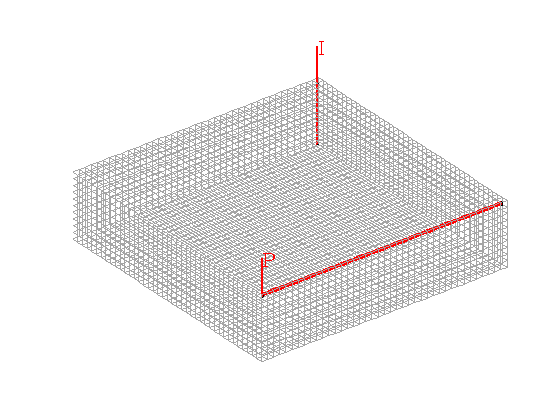

Contents
Multiscale Pressure Solver: Flow Driven by Horizontal and Vertical Well
Compare the fine-grid and the multiscale pressure solver by solving the single-phase pressure equation
for a Cartesian grid with isotropic, homogeneous permeability
require coarsegrid
Define and visualize the model
We construct the Cartesian grid, set the permeability to 100 mD, and use the default single-phase fluid with unit viscosity
cellDims = [40, 40, 10]; verbose = mrstVerbose; G = cartGrid(cellDims, cellDims); G = computeGeometry(G); rock.perm = repmat(100*milli*darcy, [G.cells.num, 1]); fluid = initSimpleFluid('mu' , [ 1, 10]*centi*poise , ... 'rho', [1000, 700]*kilogram/meter^3, ... 'n' , [ 2, 2]); % Set two wells, one vertical and one horizontal W = struct([]); W = verticalWell(W, G, rock, 40, 40, 1:10, ... 'Type', 'rate', 'Val', 1*meter^3/day, ... 'Radius', .1, 'Name', 'I'); W = addWell(W, G, rock, 1:40, 'Type','bhp', ... 'Val', 0, 'Radius', .1, 'Dir', 'x', 'Name', 'P'); % Visualize the model figure; plotGrid(G, 'FaceColor', 'none', 'EdgeColor', [0.65, 0.65, 0.65]); plotWell(G, W, 'radius', 0.1, 'color', 'r'); view(3); axis equal tight off
Set up solution structures
Here we need four solution structures, two for each simulator to hold the solutions on the grid and in the wells, respectively.
xRef = initState(G, W, 0); xMs = initState(G, W, 0);
Partition the grid
We partition the fine grid into a regular 5-by-5-by-2 coarse grid in index space so that each coarse block holds 8-by-8-by-5 fine cells. The resulting vector p has one entry per fine-grid cell giving the index of the corresponding coarse block. After the grid is partitioned in index space, we postprocess it to make sure that all blocks consist of a connected set of fine cells. This step is superfluous for Cartesian grids, but is required for grids that are only logically Cartesian (e.g., corner-point and other mapped grids that may contain inactive or degenerate cells).
p = partitionUI(G, [5, 5, 2]); p = processPartition (G, p, 'Verbose', verbose); figure; plotCellData(G,mod(p,2)); view(3); axis equal tight off CG = generateCoarseGrid(G, p, 'Verbose', verbose); S = computeMimeticIP(G, rock, 'Verbose', verbose); CS = generateCoarseSystem (G, rock, S, CG, ones([G.cells.num, 1]), ... 'Verbose', verbose); W = generateCoarseWellSystem(G, S, CG, CS, ones([G.cells.num, 1]), rock, W); xRef = solveIncompFlow (xRef, G, S, fluid, 'wells', W, 'Solver', 'hybrid'); xMs = solveIncompFlowMS(xMs, G, CG, p, S, CS, fluid, 'wells', W, ... 'Solver', 'hybrid'); dp = @(x) num2str(convertTo(x(1).pressure, barsa)); disp(['DeltaP - Fine: ', dp(xRef.wellSol)]); disp(['DeltaP - Ms: ', dp(xMs .wellSol)]);
DeltaP - Fine: 3.7478 DeltaP - Ms: 3.7875
plot output
f = figure; subplot(2,2,1) plotGrid(G, 'FaceColor', 'none', 'EdgeColor', [.6, .6, .6]); plotGrid(G, W(1).cells, 'FaceColor', 'b', 'EdgeColor', 'b'); plotGrid(G, W(2).cells, 'FaceColor', 'r', 'EdgeColor', 'r'); title('Well cells') view(3); camproj perspective; axis tight; axis equal; camlight headlight; subplot(2,2,2) plot(convertTo(xRef.wellSol(2).flux, meter^3/day), 'b'); hold on plot(convertTo(xMs.wellSol (2).flux, meter^3/day), 'r'); legend('Fine','Multiscale') title('Producer inflow profile') subplot(2,2,3) plotCellData(G, convertTo(xRef.pressure(1:G.cells.num), barsa)); title('Pressure Fine') view(3), camproj perspective, axis tight equal, camlight headlight cax = caxis; colorbar subplot(2,2,4) plotCellData(G, convertTo(xMs.pressure(1:G.cells.num), barsa)); title('Pressure Coarse') view(3), camproj perspective, axis tight equal, camlight headlight caxis(cax); colorbar